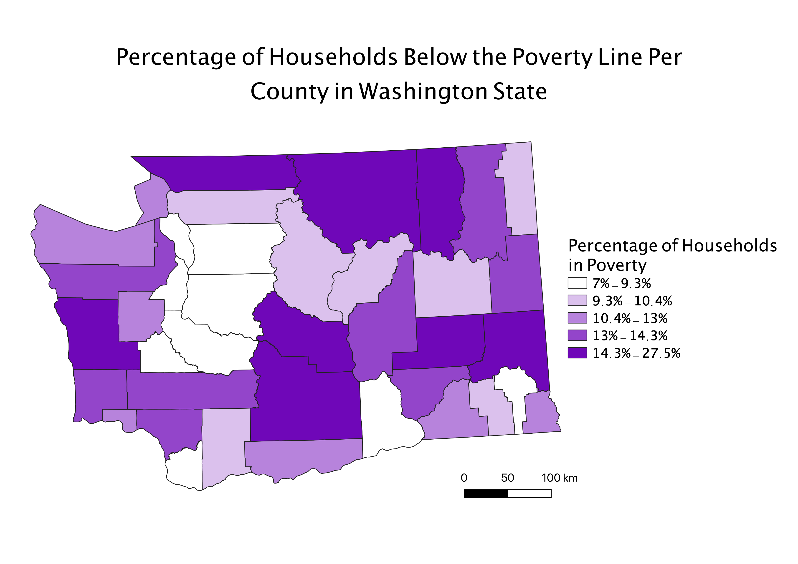
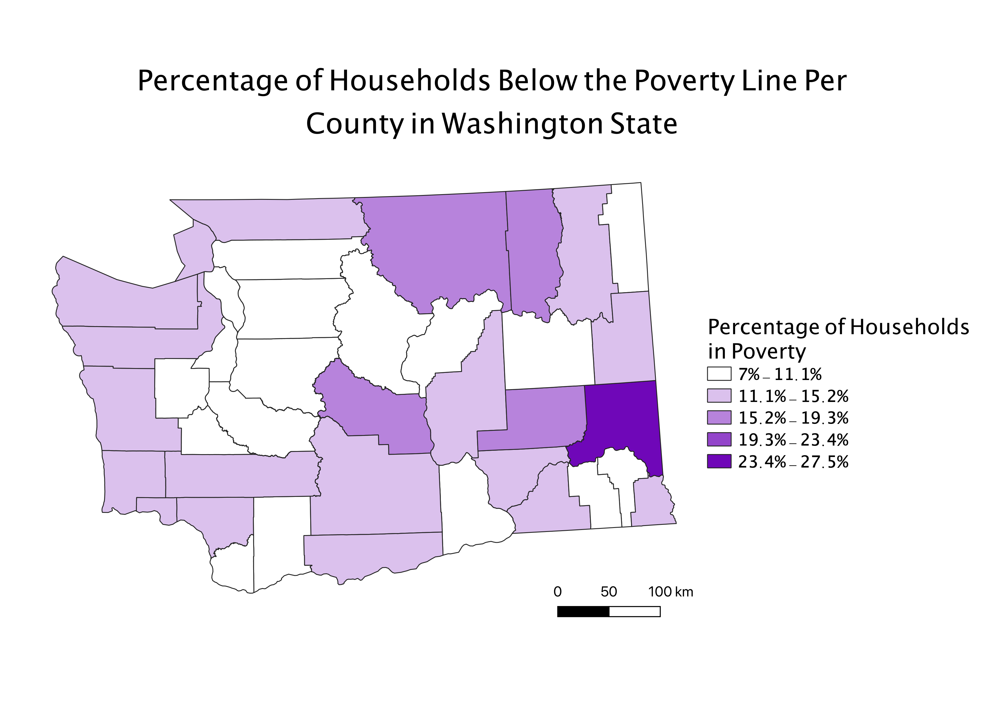
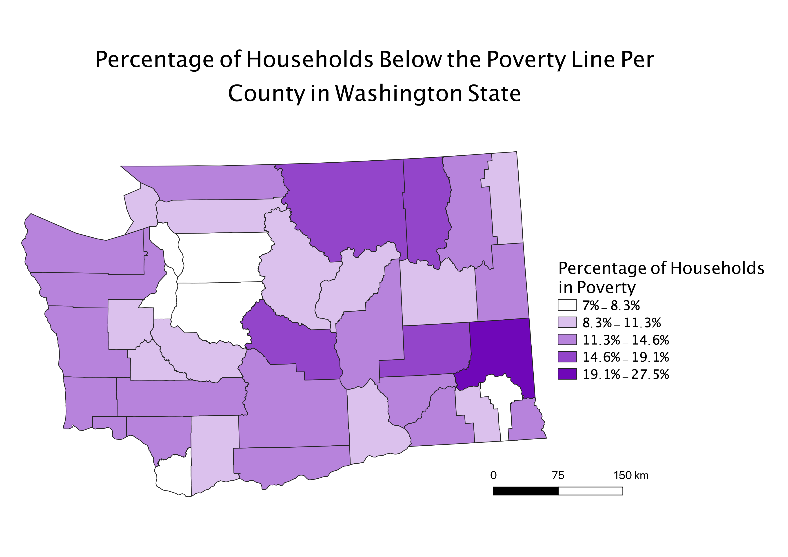

Homework 6b: Census Data Chloropleth with Ratios
By: Bettye Tish
My Selected Ratio:
Each of the three maps below uses the same ratio: the number of
households in a county below the poverty line divided by the total
households in that county. This gives a sense of the concentration
of poverty within a county, rather than just counting impoverished households.
Without the use of this ratio, population centers such as Seattle would appear to have falsely
inflated levels of poverty.
1. Equal Count Classification Scheme
An advantage of this mode is the aesthetically pleasing appearance
it creates, and clearly grouping similar counties together. A disadvantage
of this mode is that it exaggerates uniformity across an area. For example: all the dark
purple regions can only be grouped together by having a very large range within that data category.

2. Equal Interval Classification Scheme
An advantage of this mode is that it is easy to read and clearly expresses trends in a data set: the majority of counties have
low rates of poverty. However, a disadvantage of it is that exaggerates outliers in the data set: since only one
count falls in the final range, it seems as though Washinton has low poverty rates.

3. Natural Break Classification Scheme
This mode is useful because it balances grouping data with accenuating the important
differences in data. However, it would be less desirable in a data set with very similar values.

Data used for this project:
CSV dataset